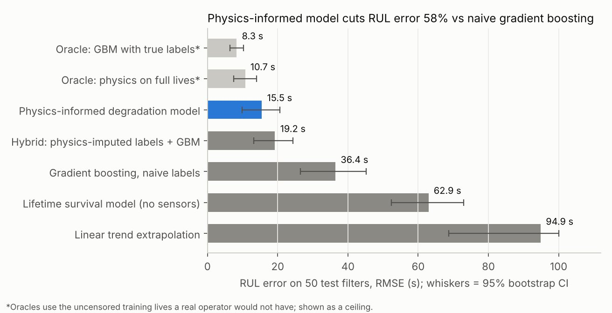
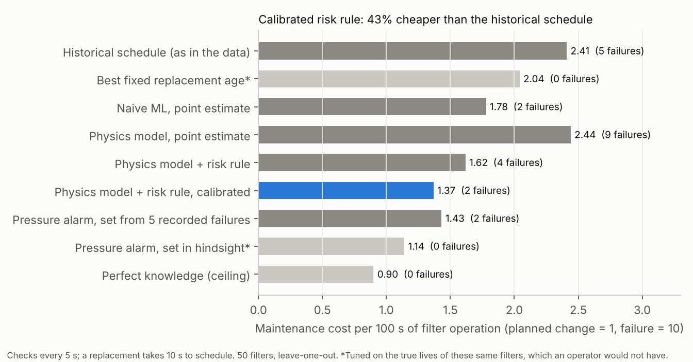

Predicting when industrial filters will clog, when most never failed
Filters fail when their pressure drop reaches 600 Pa. In the training data only 5 of 50 were allowed to fail; the rest were replaced on schedule. I modelled how the pressure rises instead of guessing failure times.
The problem
Predictive maintenance needs remaining useful life. But when parts are replaced before they fail, their failure times are hidden (right-censored). Treating each replacement as a failure, the usual shortcut, teaches a model that filters die far earlier than they do.
My first version of this project fell into exactly that trap, and later into target leakage. I retired it and rebuilt the approach from the physics. Both versions are kept in the repository.
What I did
- Censoring hides when filters fail, but not how their pressure rises. So every training trajectory is fully usable if you model the degradation signal instead of the labels.
- Modelled pressure against cumulative dust mass as a smooth transition from depth filtration to cake filtration, so that at high load it becomes linear in deposited mass, as cake-filtration theory predicts. Population parameters are fitted on all 50 censored trajectories; each filter gets its own onset and rate.
- For a new filter, inferred its parameters from its own history (MAP estimate), solved for the mass at which pressure reaches 600 Pa, and converted that to time.
- Chose the one tuned setting with a label-free check on the training set. The test set was used once.
- Turned predictions into a replace-or-wait rule using calibrated uncertainty, and priced it against the plant's historical schedule.
Results


| Model | RMSE (s) | 95% CI | Median % error |
|---|---|---|---|
| Physics-informed degradation model | 15.5 | 9.9–20.6 | 21% |
| Hybrid: physics-imputed lives + gradient boosting | 19.2 | 13.2–24.3 | 21% |
| Gradient boosting, replacement treated as failure | 36.4 | 26.5–45.2 | 88% |
| Weibull survival model, no sensor data | 62.9 | 52.3–73.0 | 136% |
Official test set, 50 filters. A leave-one-filter-out check on the training set agrees: 13.3 s vs 40.8 s.
Limitations
- Coarse dust is the weak point: RMSE 26.7 s vs 4.6 s for fine dust, because training never saw coarse-dust filters near failure.
- Uncertainty is under-calibrated: nominal 90% intervals cover 62% of test cases even after conformal calibration.
- A simple pressure alarm set from the 5 recorded failures does almost as well on cost (1.43 vs 1.37). The model's advantage is the remaining-life estimate, which the alarm cannot give.
- This is a laboratory benchmark with assumed cost ratios, so the savings are simulated, not plant savings.